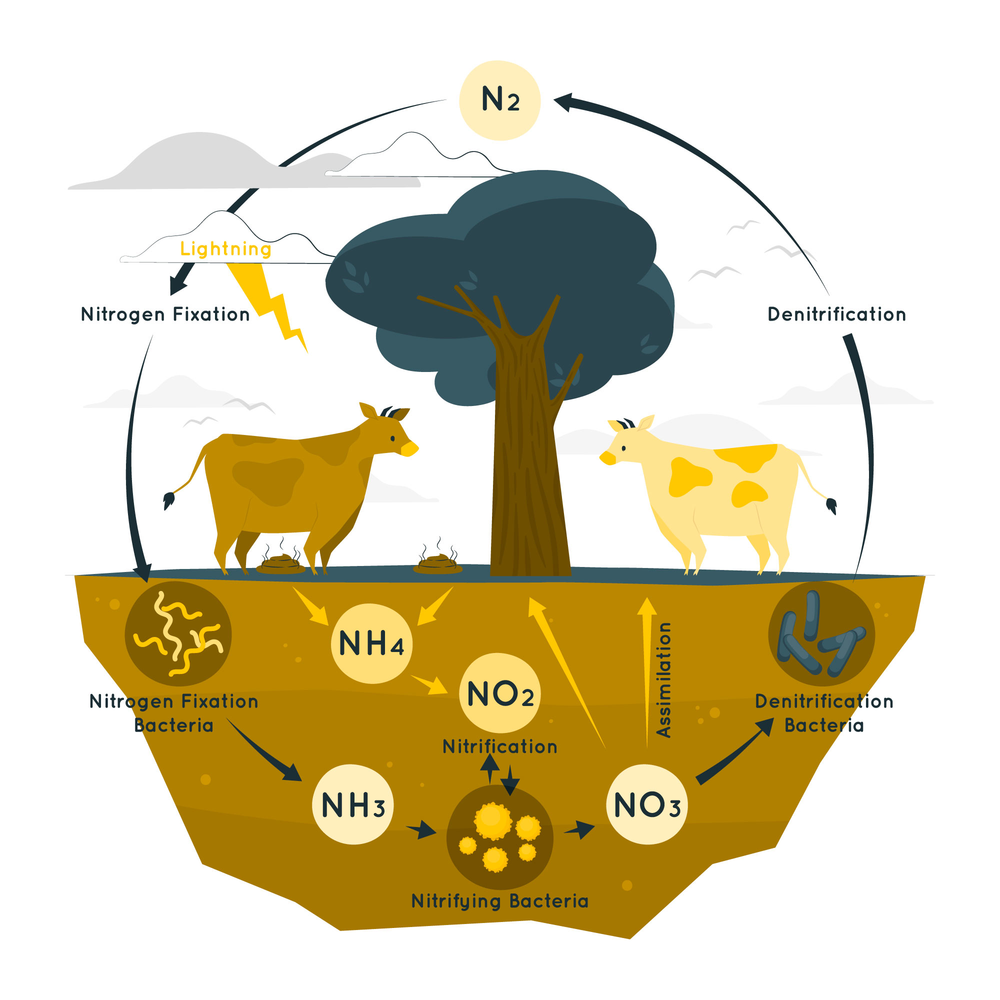
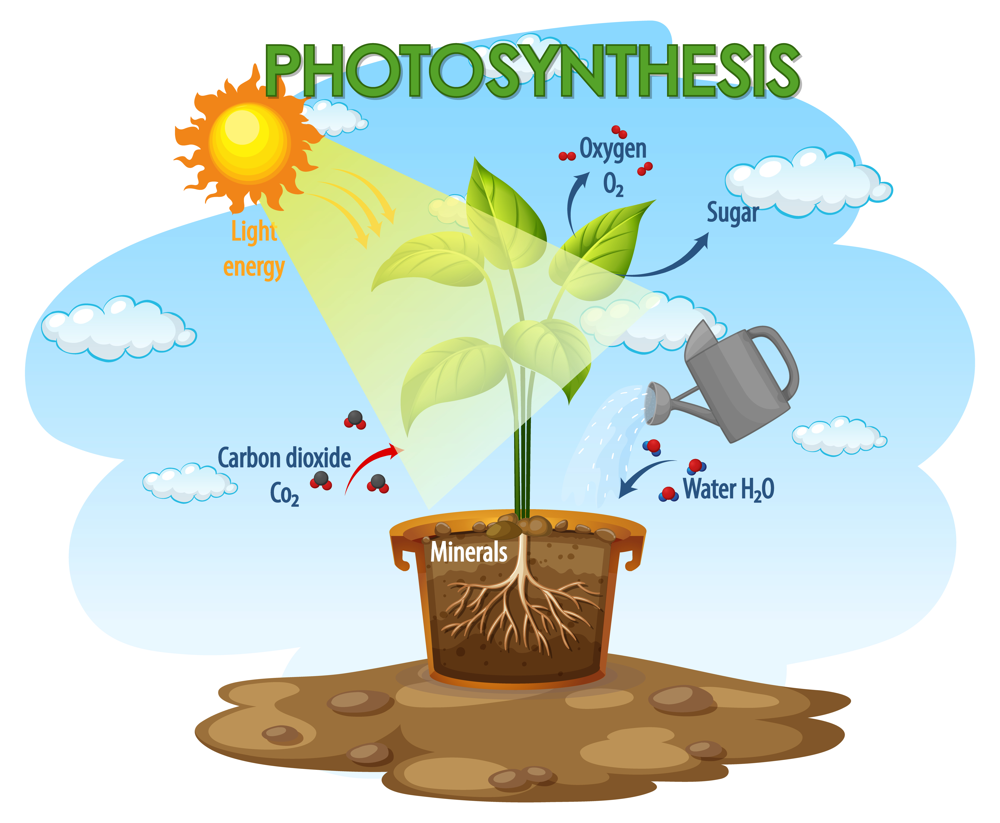

ECOSYSTEM and Their Benefits
BENEFITS

Number.1
Nurient Cycling
He was a gentle soul and a brilliant artist will stay with us for eternity through his performances over his short yet illustrious career.
..Read more

Number.2
Photosynthesis
Plants and other autotrophic organisms use sunlight to convert carbon dioxide and water into organic compounds, releasing oxygen as a byproduct.
..Read more
Number.3
Water Cycling
Ecosystems also cycle and recycle water through various processes, including evaporation, precipitation, and transpiration by plants. This helps to maintain freshwater resources and supports plant growth.
..Read more